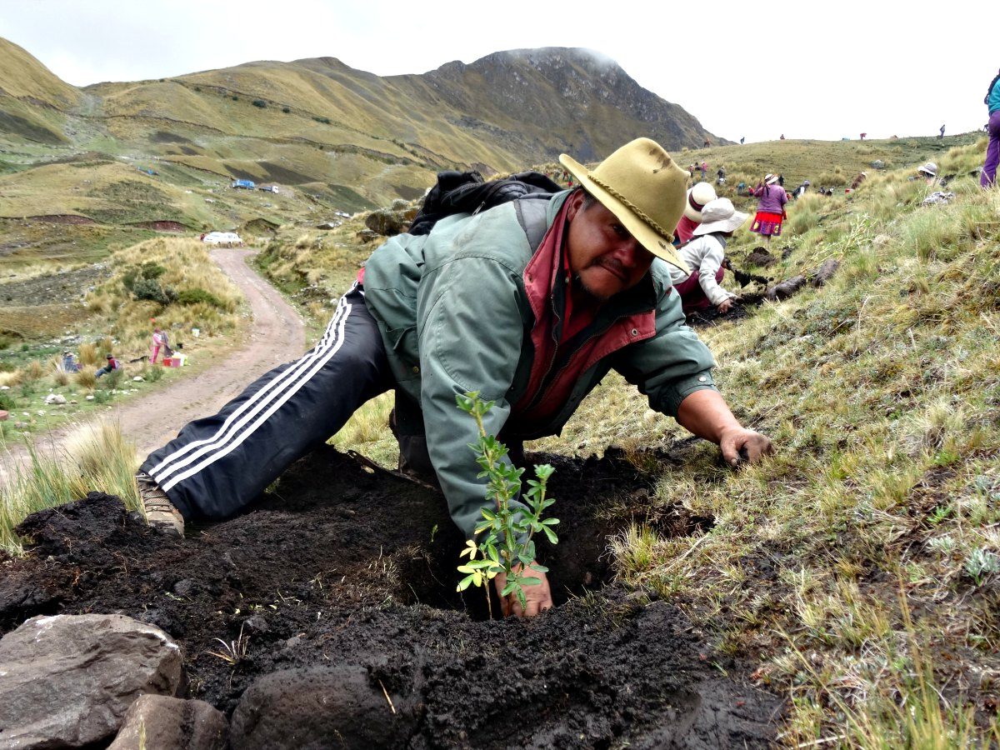

"La naturaleza es la fuente de toda la verdadera ciencia."
- Leonardo da Vinci
El Informe Planeta Vivo 2022 es un estudio exhaustivo de las tendencias de la biodiversidad mundial y la salud del planeta. Esta publicación emblemática de WWF revela un descenso medio del 69% en las poblaciones de especies desde 1970. Aunque los esfuerzos de conservación están ayudando, es necesario tomar medidas urgentes si queremos revertir la pérdida de naturaleza.
Está claro: estamos viviendo una crisis con dos caras: la pérdida de biodiversidad y el cambio climático provocados por el uso insostenible de los recursos naturales. Los científicos así lo indican: a menos que dejemos de tratar estas crisis como dos problemas separados, no seremos capaces de resolverlos.
Lee acerca de nosotrosEspecies en peligro de extinción.
De animales y plantas en peligro de extinción.
Hectáreas de ecosistemas perdidas al año.
Nuestra organización propone y concreta acciones
Ver más